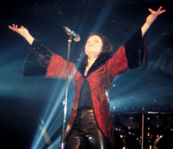
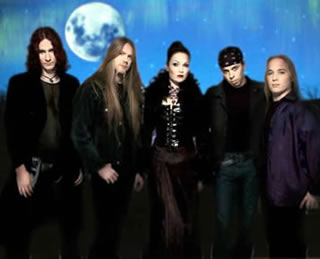
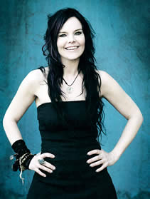

Numa madrugada fria de julho de 1996, o tecladista
Tuomas e seus amigos passavam horas agradáveis em torno
de uma fogueira em Kitee, North-Karelia. Assim, teria surgido
a idealização da banda Nightwish.
No início, era praticamente um projeto
acústico. Apenas com violões, a banda entrou em
estúdio para gravar três canções entre
outubro e dezembro de 1996. Mais tarde, a bateria de Jukka foi
adicionada. Emppu, que já tinha gravado as cordas, também
inseriu as guitarras. A sonoridade ganhava peso e se aproximava
do Metal.
Após alguns ensaios, a banda voltou ao
estúdio para gravar outras sete músicas em abril
de 1997. Foi lançada a versão promocional e limitada
de Angels Fall First. Um mês depois, o Nightwish
assinou contrato com a gravadora Spinefarm, gravando mais quatro
faixas. The Carpenter foi lançado e alcançou
uma ótima posição entre os singles oficiais
executados na Finlândia.
No
início de novembro de 1997, foi lançado o CD de
estréia Angels Fall First. A banda passou a fazer
suas apresentações ao vivo. O resultado foi além
da expectativa. A gravadora estendeu o contrato para mais um disco,
além dos outros dois do acordo inicial.
From Wishes To Eternity foi um show ao
vivo na Finlândia que virou CD, VHS e DVD; lançado
em edição limitada no ano de 2001. O EP Over
the Hills and far Away, chegou no mesmo ano com músicas
inéditas para delírio dos fãs em todo o mundo.
Em agosto deste ano, o Nightwish tocou em países como Rússia
e Coréia para levar o carisma e o talento em lugares com
menos tradição no Rock.
Em abril de 1998 começaram as gravações
para o primeiro clipe da banda, The Carpenter. Em seguida,
o baixista Sami Vänska se agregou ao grupo e iniciaram as
gravações do próximo álbum que ocupou
o período entre agosto e outubro. O clipe de Sacrament
of Wilderness foi gravado em mais uma exibição
ao vivo no dia 13 de novembro.
O álbum Oceanborn foi lançado
em dezembro de 1997 e foi um sucesso absoluto, sendo aclamado
por toda a imprensa e crítica finlandesa. O Nightwish passou
a tocar por todo o país explorando a popularidade dos trabalhos.
As apresentações nos festivais eram apoteóticas
e o álbum Oceanborn foi divulgado no exterior na primavera
de 1999, expondo o talento dos finlandeses para outros países.
O single Sleeping Sun foi lançado paralelamente
ao momento de maior destaque da banda, e alcançou a marca
de 15.000 cópias vendidas na Alemanha. A essa altura, o
Nightwish se consagrava como uma das melhores bandas de Metal
Melódico do cenário europeu e iniciava sua turnê
internacional.
No início do ano 2000 foi lançado
o álbum Wishmaster e o sucesso se ratificou além
da Europa. A faixa título ocupou a primeira colocação
nas paradas finlandesas por mais de três semanas. A turnê
de divulgação chegou na América do Sul, mas
infelizmente a vocalista Tarja Turunen, estava doente e não
pode participar das apresentações no Brasil. Porém,
a presença do Nightwish garantiu exibições
memoráveis por todo o continente.
Em outubro de 2001 foi anunciado que o baixista
Sami não fazia mais parte da banda. O músico Marco
Hietala (Sinergy) foi convidado para substituí-lo. Apesar
de um pouco mais velho que os outros membros no Nightwish, Marco
foi bem aceito pelos fãs e logo entrou em estúdio
para gravar o single Ever Dream. Em apenas dois dias
de lançamento, o single ganhou disco de ouro na Finlândia.
Century Child foi o quarto álbum lançado,
e trazia a banda mais madura musicalmente. O sucesso foi incontestável
e 30.000 cópias foram vendidas em apenas duas semanas.
A imprensa especializada não se cansava de elogiar a competência
da banda.
Century
Child teve sua turnê programada para três meses. A
banda ainda desmentia os boatos da possível saída
de Tarja. Finalmente, o Nightwish voltou ao Brasil se apresentando
em seis cidades: São Paulo, Brasília, Belo Horizonte,
Curitiba, Porto Alegre e Rio de Janeiro. Em São Paulo,
6.700 fãs se apertaram no CrediCard Hall para
acompanhar uma apresentação histórica. Os
próprios integrantes confirmavam à revistas européias
que havia sido a mais emocionante apresentação da
história da banda.
Em 9 de setembro o Nightwish se apre sentou
pela última vez antes de fazer uma pausa para que
Tarja concluísse os estudos. Assim, os outros integrantes
puderam dedicar-se a projetos paralelos.
O Nightwish retornou aos trabalhos de estúdio
em 2003. No início do ano seguinte, lança o single
Nemo, que traz quatro músicas e inclui a faixa
título em duas versões: álbum e orquestral.
Esta segunda versão recebe um arranjo repleto de cordas
e sopros, que presta uma atmosfera épica e soma-se ao vocal
deslumbrante de Tarja Turunen.
Em meados do mesmo ano é apresentado Once.
As onze faixas deste álbum dão continuidade ao single
anterior (The Siren) e mantém o padrão
de qualidade. Tanto nos arranjos como na performance de Tarja,
Once apenas confirma a capacidade e ratifica o espaço que
o Nightwish conquistou no cenário mundial. Neste mesmo
ano é lançado o single Sleeping Sun com
um videoclipe e versões desta faixa.
Porém, no final de outubro de 2005, uma
notícia abala os fãs em todo o mundo. Após
a última apresentação da turnê End
of an Era, a banda entrega em mãos uma carta
dirigida a Tarja na qual anuncia a "expulsão"
da vocalista, alegando, entre outros motivos, que Tarja priorizava
os lucros e menosprezava os outros integrantes. Esta carta foi
publicada no site oficial do Nightwish. Tarja, por sua vez, responde
em outra carta publicada em seu site oficial, dizendo-se "chocada"
e "confusa" com os acontecimentos.
O ano de 2006 inicia-se coberto de incertezas.
Apesar da excelente recepção que a banda conquistou
após Once, a saída de Tarja e diversos boatos sobre
quem poderia ocupar a condição de vocalista e até
mesmo um possível fim da banda, deixam fãs de todo
o mundo apreensivos. Entretanto, a banda ainda mantém alta
sua popularidade e recebe diversos prêmios concedidos pela
imprensa especializada. Em março, a banda anuncia em seu
website que está a procura de uma vocalista. Em seguida
é lançado o DVD End of an Era. Em setembro,
iniciam-se os trabalhos para o novo álbum.
Até
janeiro de 2007, o Nightwish recebeu demos de cantoras que canditavam-se
ao cargo de vocalista. Paralelamente era lançado Once
Upon a Nightwish, um livro escrito por Mape Ollila que acompanhou
a banda por dois anos e produziu esta obra com 400 páginas
e 32 fotos; tornando-se um item indispensável para os fãs
de todo o mundo.
Em maio, a banda anuncia oficialmente a nova vocalista:
a sueca Anette Olzon. Em seguida é gravado e lançado
o single Eva, que traz apenas uma faixa e marca a estréia
de Anette. No mês seguinte, a banda foi até Los Angeles
gravar dois videoclipes para os próximos singles: Amaranth
e Bye Bye Beautiful. Em agosto, o single Amaranth
foi lançado e conquistou Disco de Ouro na Finlândia
em apenas dois dias.
Finalmente, em setembro, é lançado
o primeiro álbum oficial sem a presença de Tarja
Turunen. Estima-se que Dark Passion Play teve um custo
de produção acima de € 500 mil (o dobro de
Once) e contou com a participação da Orquestra Filarmônica
de Londres. Este novo trabalho traz 13 faixas sendo que algumas
são bastante extensas (The Poet and the Pendulum
tem quaze catorze minutos de duração) e é
considerado pela crítica como o melhor trabalho da banda.
Após um longo período de especulações
e longe dos estúdios, o Nightwish retornou à atividade.
Obviamente não é possível esperar que a banda
resgate o lirismo dos primeiros álbuns. Entretanto, nesta
nova era, pode-se esperar um Nightwish mais ousado e com uma qualidade
musical superior; sem, no entanto, perder a identidade que um
dia conquistou milhões de ouvintes.
Por
Spectrum
Downloads
Disponíveis: